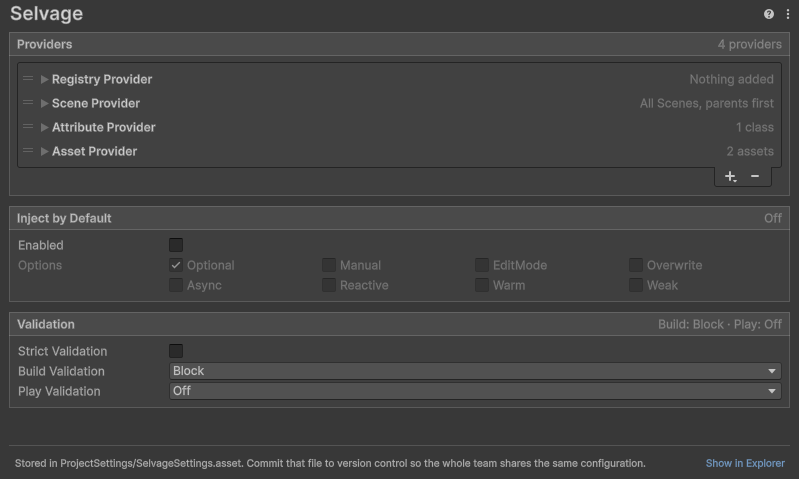

Project Settings reference
To open the Selvage page, go to Edit > Project Settings >
Selvage, or to Tools > Selvage > Settings.
Selvage saves the page in ProjectSettings/SelvageSettings.asset. Commit that file so your team and your
build machines use the same settings. To find the file, select Show in Explorer (Reveal in
Finder on macOS) at the bottom of the page.

Providers
The Providers section holds the provider list. Selvage tries the providers from top to bottom.
| Control | Description |
|---|---|
| + | Adds a provider. The menu lists the providers that ship with Selvage, then the provider classes of your project. |
| - | Removes the selected provider. |
| A provider's foldout | Shows the provider's settings, and what it gives. A collapsed provider summarizes its settings at the end of its row. |
A provider that code turned off with Enabled has a dimmed title, and its summary reads
Off. A provider whose class isn't in the project, such as after a rename or from a setup of
another project, is an error row that keeps its place and settings until the class is back.
Providers that code adds with Injector.AddFirst and Injector.AddLast appear above and
below the list, read-only, each with a link to the line of code that added it. For more information, refer to
Manage the provider list.
Scene Provider
The Scene Provider's settings apply to every member it serves. The list can hold several Scene Providers, each with its own settings.
| Property | Description |
|---|---|
| Reach | How far from the member's GameObject the provider looks. Each value includes the ones before it. Among the components that preferences leave tied, the closest one wins.
|
| Parents First | Look at the parents before the children, when Reach includes the hierarchy. Enabled by default. |
| Include Inactive | Also give components on inactive GameObjects. Disabled by default. |
Other shipped providers
| Provider | Expanded, displays |
|---|---|
| Registry Provider, and each registry of your own | Each object code has added, with the type it's given as and its lifetime when it isn't Shared. Also the code that reaches the registry, such as RegistryProvider.Listed. |
| Attribute Provider | The classes marked [Provide]. |
| Asset Provider | Every asset your project provides, by Provide Definition. |
Inject by Default
The Inject by Default section injects every class of every assembly that references Selvage, as
if each assembly had [assembly: Inject]. For more information, refer to
Inject every class of the project.
| Property | Description |
|---|---|
| Enabled | Injects every class of the project. To leave out an assembly, a class or a member, add [DontInject] to it. |
| Option toggles | The options every member receives, unless its own [Inject], its class or its assembly sets them. Optional is enabled by default. |
| Apply and Recompile | Saves the changes and recompiles your scripts. Appears while a change is pending, and is unavailable in Play mode. |
| Revert | Discards the pending changes. |
Validation
The Validation section runs the check of the Validation tab of the Dependencies window when you build and when you enter Play mode. For more information, refer to Validate when you build or enter Play mode.
| Property | Description |
|---|---|
| Strict Validation | Treats a required member that no provider is guaranteed to give as Missing, so that every required dependency is proven in the Editor. Disabled by default. |
| Build Validation | What a build does when a member is Missing: Off, Warn, or Block. The default is Block. |
| Play Validation | What entering Play mode does when a member is Missing: Off, Warn, or Block. The default is Off. The check reads every type in the project, which slows the first entry into Play mode after each script change. |
Setups menu
A setup is everything on the Selvage page. The More (⋮) menu at the top right of the page contains the following items:
| Item | Description |
|---|---|
| Default, and your setups | Replaces the page with that setup. Default is the setup that ships with Selvage. |
| Save Setup... | Saves the page under a name, for every project on this computer. |
| Delete Setup | Deletes one of your setups. |
| Save Setup to File..., Load Setup from File... | Saves or loads a setup as a .json file, to share it with another computer or person. |
The help button beside the menu opens the User Manual.